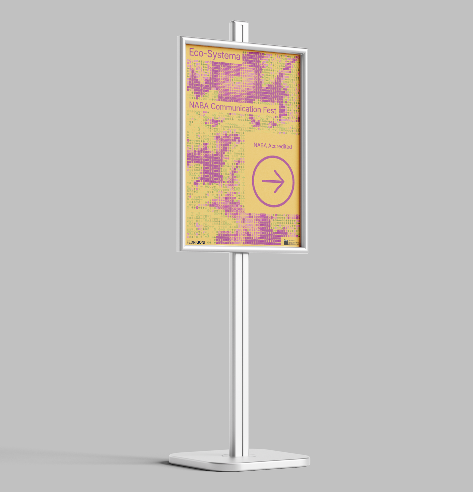
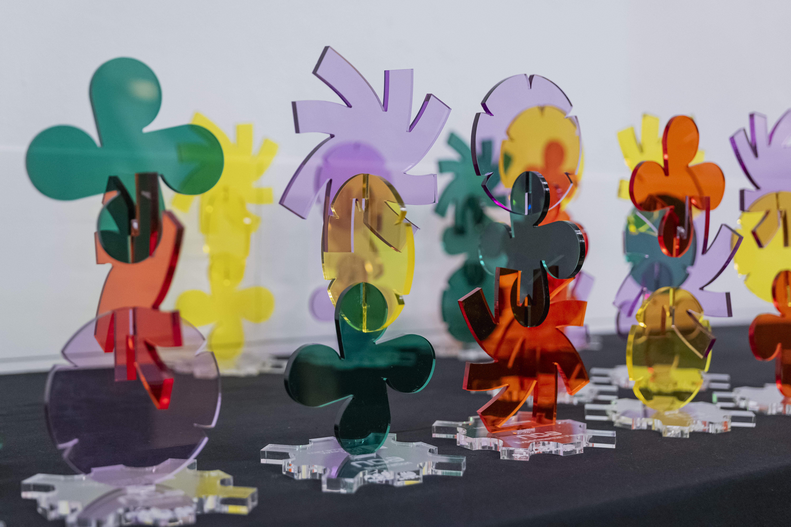
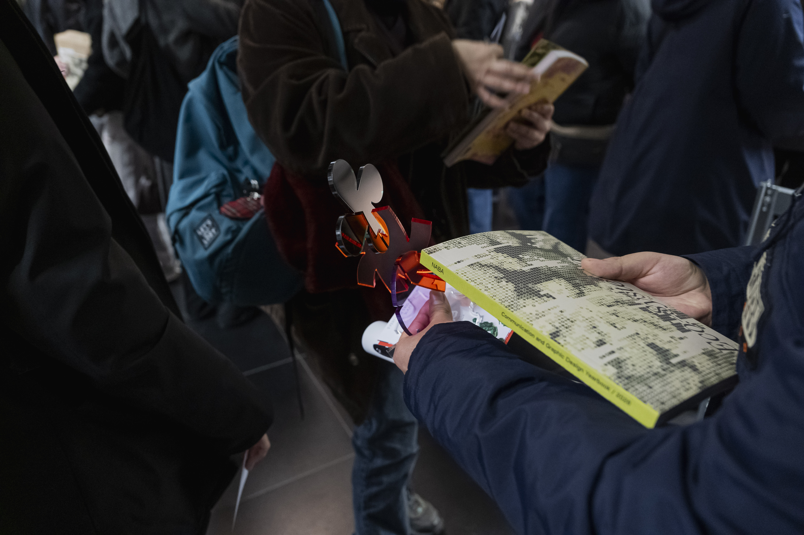
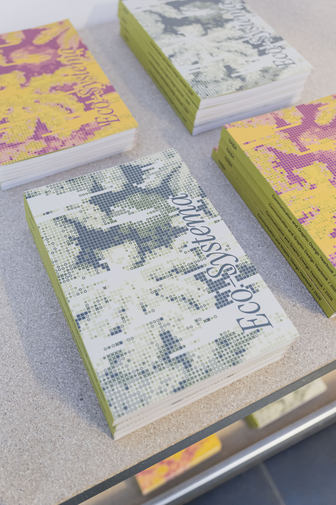
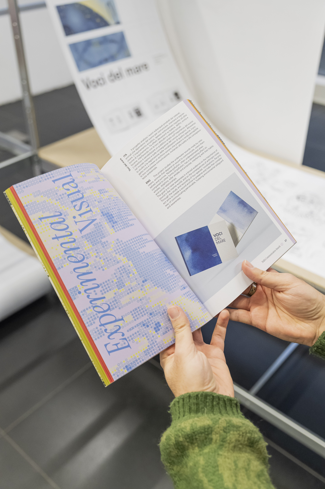
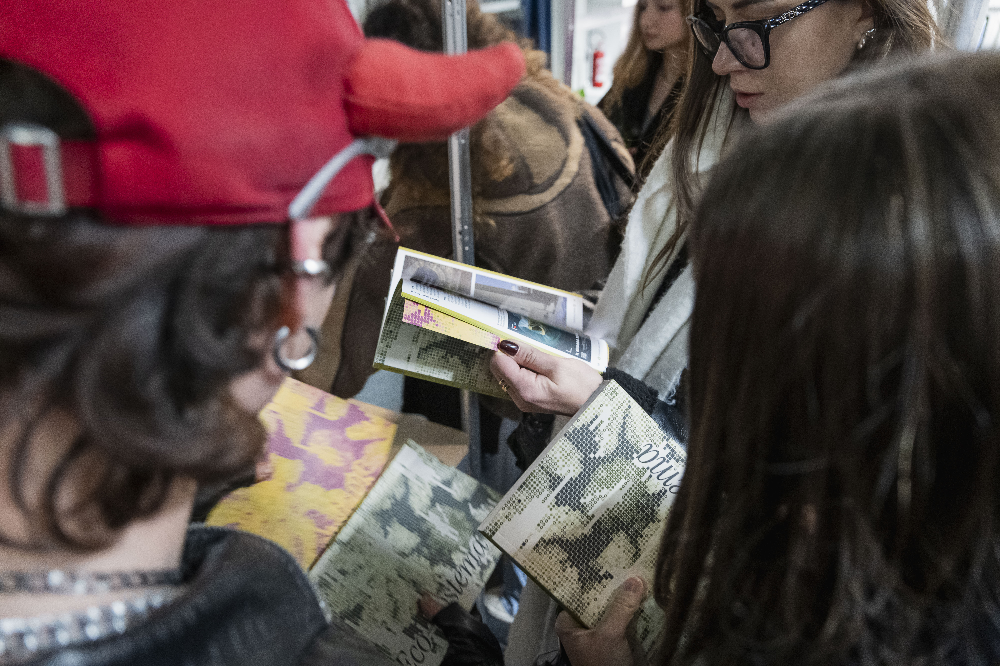

Naba Communication Fest
Brand ID + Motion graphics
Naba Communication Fest (2025).
The project for the NABA Communication Awards 2025 starts from the idea of an ecosystem: a set of individual elements that coexist within a space and define it through their relationships. From this concept, a brand identity takes shape in which the symbol becomes the basic unit of visual communication. We built a system based on 10 symbols, each associated with one award category and used as a generative module to create visuals, patterns, and identity applications. The symbols behave like pixels: small autonomous units that, together, form more complex images and visually express the idea of a creative community in constant evolution. Alongside the brand identity, we developed a motion graphics system in After Effects, where the symbols animate as modular particles of the image. Motion becomes an integral part of the identity: the signs aggregate, transform, and generate dynamic compositions, reinforcing the concept of a visual ecosystem. The identity was applied across different touchpoints, including the logo, category visuals, posters, digital materials, merchandising, editorial cover, and physical award. The presentation also includes the "Eco-Systema" concept, the modular logo, and applications on badges, tote bags, posters, screens, and promotional objects.







